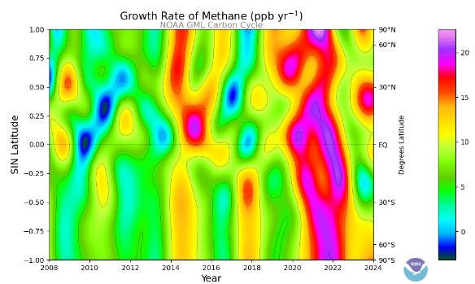

A bustling room filled with world leaders, diplomats, and experts. The air is thick with tension and anticipation. The topic of discussion? Climate change. "Folks, let's face it. Our planet's in a bit of a pickle," a seasoned diplomat begins, his voice laced with a hint of urgency. "We're feeling the heat - literally! Rising sea levels, extreme weather events, and melting glaciers are just some of the symptoms. It's like our planet's running a fever, and we're the ones who need to bring it down." A younger, more idealistic leader chimes in, "Think about future generations. We're not just talking about the next decade or two. We're talking about leaving a livable planet for our children, grandchildren, and great-grandchildren. It's a moral imperative." A pragmatic economist adds, "But let's be realistic. Transitioning to a low-carbon economy will require significant investments. We're talking about new technologies, infrastructure, and job training. It's a big challenge, but the rewards are even bigger. A sustainable future means a more prosperous one." As the discussion continues, the weight of the issue becomes increasingly clear. It's not just about science and economics; it's about our very way of life. The choices we make today will shape the world for generations to come.
Data Analysis
The top part shows how the temperature has been rising over time. You can see that the line has been going up steadily since the 1960s. This means that the amount of carbon dioxide in the atmosphere has been increasing. The bottom part shows how fast the temperature is rising. Notice that the line goes up and down, but the overall trend is upward. This means that the rate at which carbon dioxide is increasing is also getting faster.
Data Sources
- NOAA Global Monitoring Laboratory: Provides extensive data on greenhouse gas concentrations.
- CO₂ Data Repository: A public repository for historical and recent CO₂ levels.
- EPA Greenhouse Gas Reporting Program: Offers comprehensive data on greenhouse gas emissions in the U.S.
This graph is a clear sign that global warming is happening. The increasing levels of carbon dioxide are trapping more heat in the atmosphere, causing the planet to warm up. This is a serious problem because it can lead to melting glaciers, rising sea levels, more extreme weather, and changes in the habitats of many animals. It's like watching a fever chart for the Earth. And the fever is rising, and it's rising fast.
Visualizing the Data
To facilitate better understanding, we will incorporate graphical representations of the CO₂ and CH₄ data, showcasing trends over time. These visualizations will help illustrate the urgency of addressing greenhouse gas emissions.
A Colorful Story of Methane's Rise
Imagine a vibrant, swirling ocean. Each ripple and current represents the changing levels of methane gas across the globe over the years. The colors are like a secret code Bright hues mean methane levels are rising rapidly, while cooler tones show areas where the increase is slower or even declining. the steady rise of methane gas in our atmosphere over centuries. It starts in the 1700s, a time when humans began to rely more on fossil fuels. As the years pass, the line climbs higher and higher, reflecting the growing concentration of methane.
Methane Measurement

It is more dramatic, a rollercoaster of ups and downs. It shows the year-to-year changes in the growth rate of methane. Sometimes, the line shoots up, indicating a rapid increase. Other times, it dips, suggesting a slower growth or even a temporary decline. But there's a twist! Even when the growth rate slows, the overall trend remains upward. It's like a car climbing a hill; even if it pauses to rest, it's still moving uphill. Methane, a potent greenhouse gas, is accumulating in our atmosphere at an alarming rate. This has serious implications for our climate, including rising temperatures and more extreme weather events.
For further details and interactive visualizations, please refer to our Interactive Map.